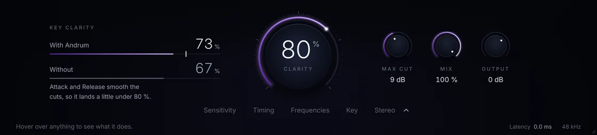
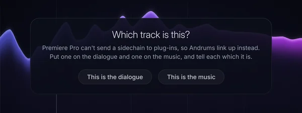
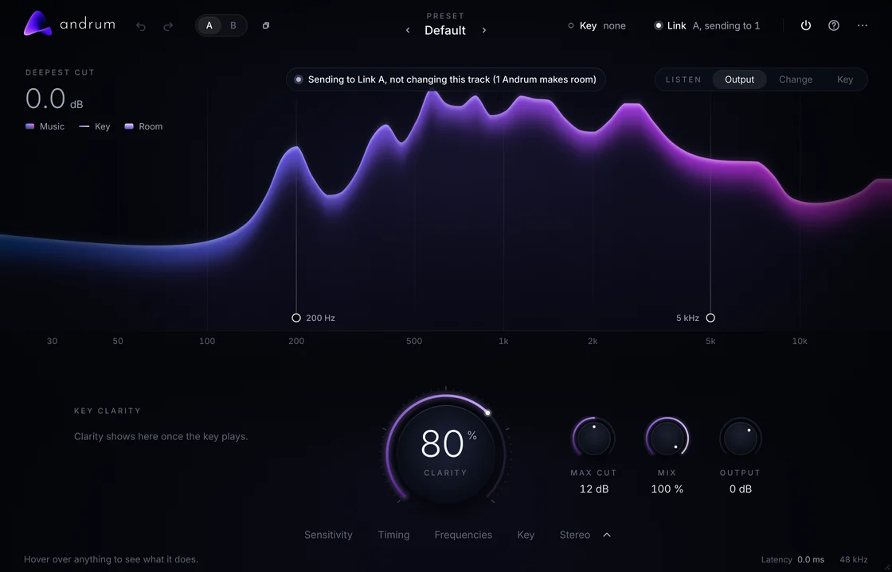
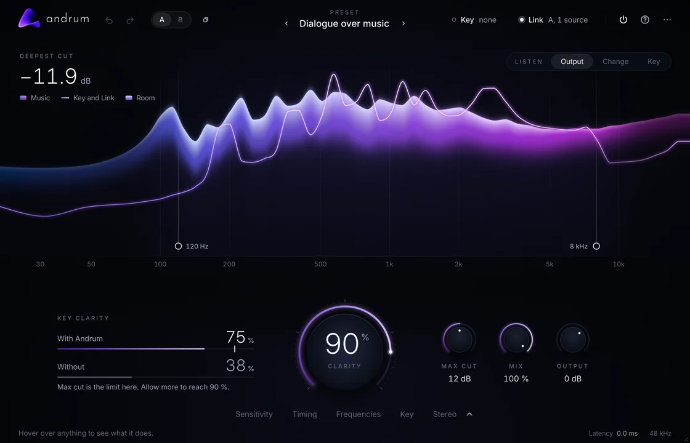
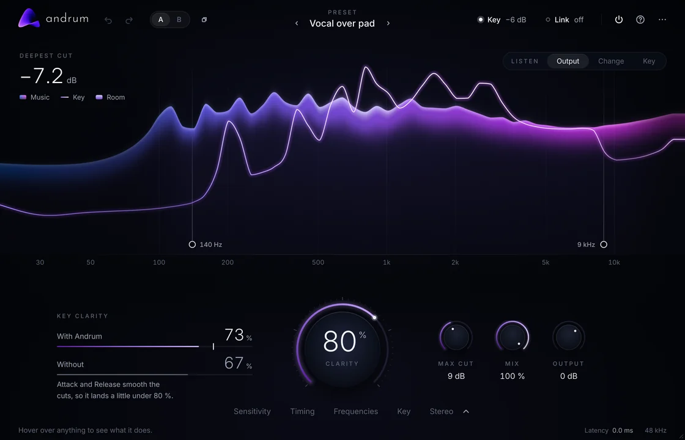

Make room
for the voice.
Andrum turns the music down only where it covers the voice, and only as much as it takes. The words come through. The music keeps its energy.
Every feature free for 7 days. Mac and Windows.
- Voice
- 70 % clear
- Music
- 3.3 dB quieter
A voice over a full track, three ways. Press Listen.
The same clarity, for 3.3 dB instead of 13.6.
You know the two options. Leave the music where it is and lose the words. Or pull the whole track down until the voice comes through, and lose the song.
In the song above, Andrum’s own meter reads the voice as 24 % clear while it sings. To get it to 70 % with the fader, the whole track has to come down 13.6 dB.
Andrum gets to the same 70 % by turning down only the parts of the music that cover the voice, and only while it sings. The music ends up 3.3 dB quieter.
| What is done to the music | The voice | The music |
|---|---|---|
| Untouched | 24 % clear | as it was |
| Turned down | 70 % clear | 13.6 dB quieter |
| Andrum | 70 % clear | 3.3 dB quieter |
The song at the top of the page, run through Andrum 1.9. Clarity is Andrum’s own meter, averaged while the voice sings. The music’s level is its loudness (LUFS).
Ask for clarity, not decibels.
There is one dial. Turn it to how clear the voice should be, and Andrum makes the smallest cut that gets it there.
Two bars show how clear the voice is with Andrum and without it, so you see what you get for what you give up. There are no thresholds, ratios or bands to set. And when the voice already comes through, the music is left alone.

Your editor can’t send a sidechain. Andrum doesn’t need one.
Premiere Pro, DaVinci Resolve and Final Cut Pro can’t send a sidechain to a plug-in, so the tools that need one have nothing to listen to. Two Andrums link up instead, with no routing:
- Put Andrum on the dialogue and click This is the dialogue.
- Put Andrum on the music and click This is the music.
The music now makes room wherever someone speaks, without a single volume curve. Its Andrum starts out set for speech, and the dialogue’s Andrum shows how many Andrums are making room for it, so you can see the link is complete.
The export starts the way playback sounded.



In a mix, it stays out of the way.
A vocal over pads and a wall of guitars. Rap over a dense beat. A kick through the bass. Reverb that steps back under the words and blooms in the gaps.
- Only what it takes
- A spectral ducker cuts deepest where the voice is loudest. Andrum cuts where the music hides the voice, and stops when the voice is clear.
- No latency
- Zero samples, so your app has nothing to make up for. Up to 30 ms of lookahead when you want it.
- No threshold
- Andrum follows the level of the voice by itself. A voice at −12 dBFS and one at −42 get the same room.
- Breaths don’t count
- Esses, breaths and reverb tails can be left out of what Andrum listens to, so the music doesn’t flutter around them.
- Soft edges
- Two limits keep Andrum to the part of the spectrum you pick. Past each one it fades out over as much as three octaves.
- The width stays
- Linked, Left and Right, or Mid and Side: let the centre make room while the sides stay wide.

Measured, not claimed.
Every number here is printed by Andrum’s own test suite, run on 1.9.0, the version you download.
Only what it takes
2.7 dB
With the voice 6 dB over the music and the dial at 80 %, Andrum cuts 2.7 dB on average and the voice is 88 % clear. Its engine run as a plain spectral ducker cuts 11.7 dB.
Left alone
0.0 dB
With the voice 12 dB over the music it is already 91 % clear, and Andrum cuts 0.01 dB on average. Where the music is 30 dB over the voice, out of reach, it cuts nothing.
Esses
2.4 dB
What is left of a 12 dB cut at 6.4 kHz while the singer says “s”. The vowels keep all 12, and a reverb tail keeps 0.8.
Any level
12.0 / 12.0 dB
The same room for a voice at −12 and at −42 dBFS. A fixed threshold gives 12.0 and 2.8.
Latency
0 samples
Nothing for your DAW or editor to make up for. Up to 30 ms of lookahead when you want it, for a kick through a bass.
Resolution
61 bands
A sixth of an octave apart, from 20 Hz to 20.5 kHz, worked out again every 5 ms.
Precision
0.64 dB
The most a cut strays from the one Andrum means to make, anywhere in the spectrum, from 44.1 to 192 kHz.
Transparency
Bit-exact
With no voice to make room for, the music comes out exactly as it went in, with lookahead or without.
Load
5.5 %
Of one core on our test machine, at 48 kHz in stereo with everything on. When its inputs fall silent, Andrum rests.
In the tests the voice is a sung voice and the music is pink noise, with Max cut at 12 dB. The song at the top of the page is measured separately, on that song.
Where it runs.
- For music
- Logic Pro, Ableton Live, FL Studio, Cubase, Studio One, Bitwig Studio, Reaper and GarageBand.
- For picture
- Premiere Pro, DaVinci Resolve and Final Cut Pro.
- It comes as
- An Audio Unit and a VST3 on a Mac, a VST3 on Windows, and a standalone app on both.
- Not yet
- Pro Tools. It only loads AAX plug-ins, and Andrum isn’t one yet.
Try it free. Buy it once.
The free trial
Every feature for 7 days. After that Andrum lets the sound through untouched and keeps every setting, so your sessions still open.
On a phone or a tablet? Andrum runs on a Mac or a Windows computer. Send yourself the link and download it there.
Send the link to my computer It opens your share menu or your mail app. We don’t see your address.- Download for MacmacOS 11 or later, Apple silicon and Intel. Disk image, 23 MB.
- Download for WindowsWindows 10 and 11, 64-bit. Installer, 9 MB.
Installing
On a Mac, open the disk image and double-click Install Andrum. It’s signed and notarized by Apple, so it opens straight away.
The Windows installer isn’t signed by Microsoft yet, so the first time, Windows may say it protected your PC: click More info, then Run anyway.
Then rescan plug-ins in your app if it doesn’t find Andrum by itself. Version 1.9.0. File checksums: SHA-256.
The licence
€59 once, VAT included
- Every feature, as an Audio Unit, a VST3 and a standalone app
- For one person, on up to two computers
- Every 1.x update included
- For any work, commercial and broadcast included
- No subscription, no iLok and no account: Andrum goes online once to fetch your licence, then works offline
- 14 days to change your mind: your money back, no questions asked
Your licence key appears the moment you pay, and Polar e-mails you a link to it. How to add it.
Thank you.
Your licence key is on its way. It is also in the e-mail from Polar: click Access purchase there.
- Copy your licence key.
- Open Andrum and click Trial at the bottom of its window.
- Click Paste license. Andrum fetches your licence once and works offline from then on.
Questions.
What does the clarity percentage mean?
How much of the voice a listener can make out over the music, as Andrum’s model of the ear measures it: 0 % is fully masked, 100 % fully clear. You choose the clarity you want on the dial, and Andrum shows what it reached, with its cut and without it.
Does Andrum change the voice?
No. Andrum only changes the track it’s on. The voice it listens to passes through untouched.
Is it only for vocals?
No. Anything can make room for anything: a kick through a bass, a snare through synths, a lead over chords, reverb and delay that step back under a vocal. There are 18 presets to start from, and you can make any setting the one new Andrums start with.
Does it work in Pro Tools?
Not yet. Pro Tools only loads AAX plug-ins, and Andrum isn’t available as AAX yet.
What happens when the trial ends?
Andrum lets the sound through untouched until you add a licence. Nothing in your sessions breaks, and once you add a licence it works exactly as before.
How do I add my licence?
Right after you pay, your licence key appears on this page, and Polar’s receipt e-mail links to it (Access purchase). Copy the key, open Andrum, click Trial at the bottom of its window, then Paste license. On a computer without internet, get your licence here and add it as a file.
Can I use it on more than one computer?
Yes. One licence covers one person on up to two computers, Mac or Windows: paste the same key on each. When you get a new computer, remove the licence from the old one in Andrum and add it on the new one.
Does it need the internet or an iLok?
No iLok and no account. Andrum goes online once, when you paste your licence key, to fetch your licence. After that it never connects to the internet, and your licence keeps working offline.
Can I get a refund?
Yes. If Andrum isn’t right for you, write to me@davidhjalmarlindberg.com within 14 days of buying and you get your money back in full, no questions asked. More about refunds.
Who takes the payment?
Polar, which sells Andrum for us as merchant of record. It takes the payment (card, Apple Pay or Google Pay), adds the right VAT or sales tax for your country (the €59 includes it) and e-mails your receipt, with a link to your licence key.
How do I remove Andrum?
On a Mac, open the Andrum disk image and double-click Uninstall Andrum. On Windows, open Settings, then Apps, choose Andrum and click Uninstall.